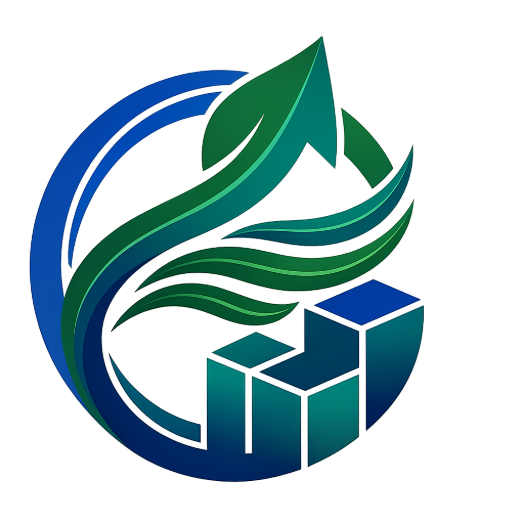
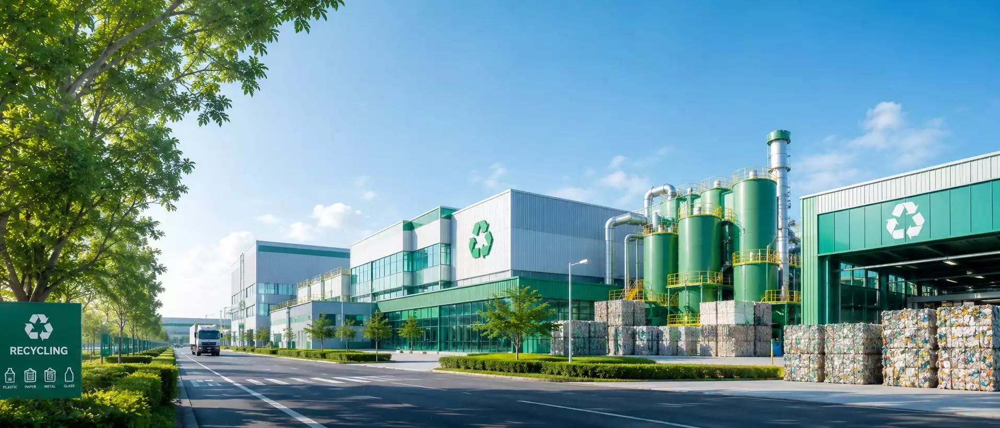
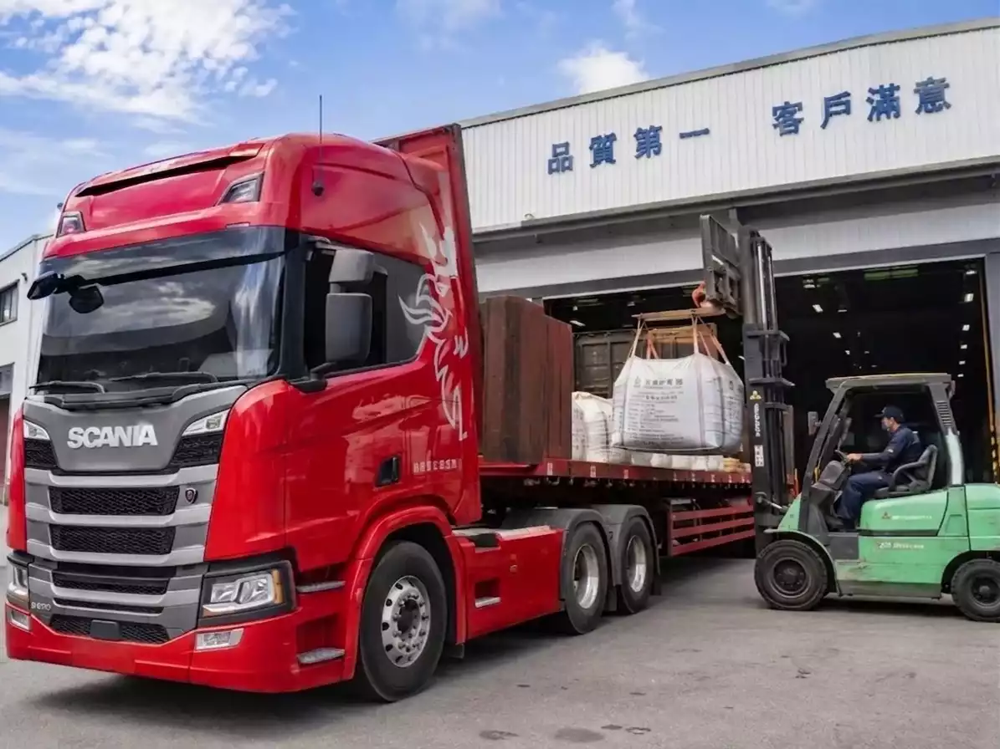
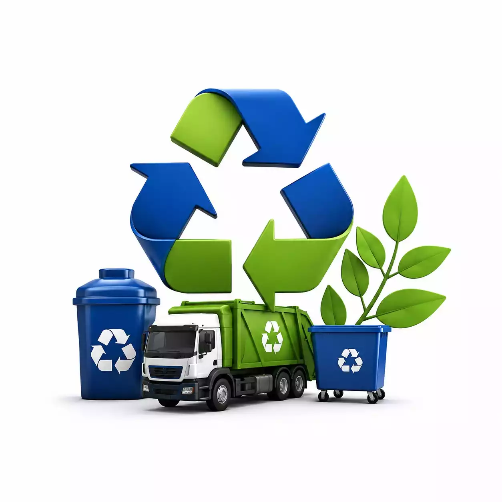
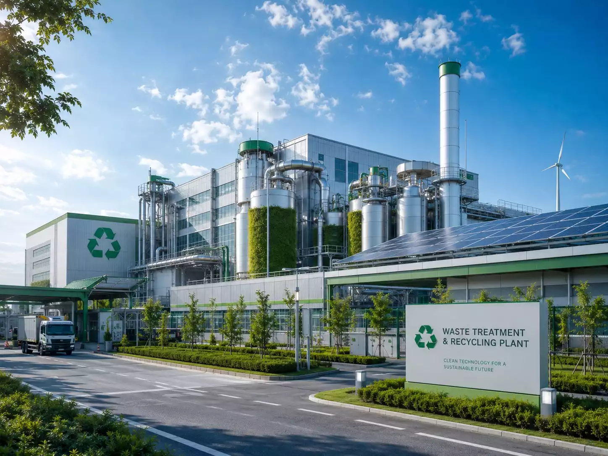
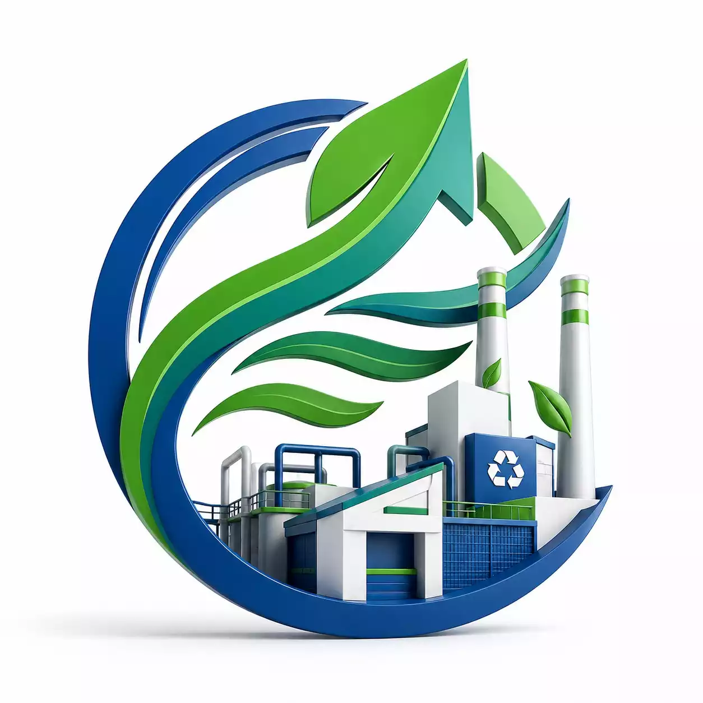
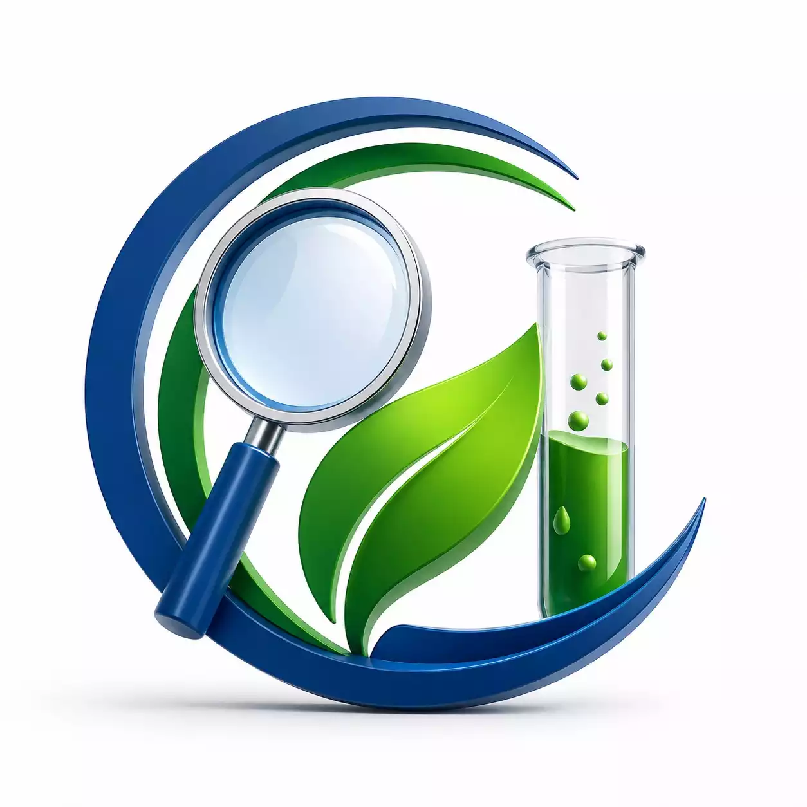

從現場勘查、合規評估到終端處置，為企業量身打造專屬清運方案


針對企業廠區產出之各類事業廢棄物，我們提供安全、合規且高效率的專車清運服務。嚴格把關每一道清運程序，確保您的廠區環境整潔與法規遵循。


打破單一處理廠的技術限制，我們聯袂全國多家頂尖處理機構，為您的廢棄物尋找最環保且具經濟效益的最終去處。

環保專案不僅僅是清運，更需要專業的工程評估。我們提供從前端勘查到後端處置的單一窗口全程對接服務。
環保法規日趨嚴格且繁雜，利多源不僅是您的清運商，更是您最可靠的環保法規顧問團隊。
標準化、透明化的作業流程，為您打造安心無虞的環保清運體驗
初步了解廢棄物產出狀況，專業團隊親臨廠區實地確認細節與採樣。
根據廢棄物特性代尋合法終端廠，提供透明化報價與最適處置規劃。
簽署合法甲級清運合約，並協助完成環保署系統建檔與連線申報作業。
依約定時間，派遣領有合格證照之專業清運車隊與人員進行現場作業。
追蹤廢棄物順利進入終端處理廠，三聯單結案並提供妥善處理證明。